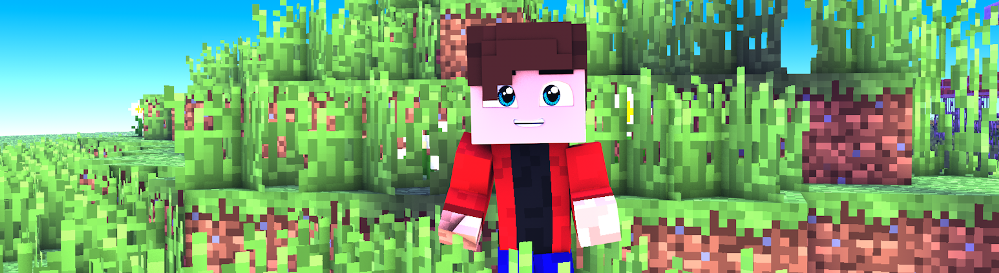

DENDI_KAN
мой первый сайт

Как я стал ютубером
мне просто один раз стало
скучно и я сделал канал

Что вам надо иметь для записи видео
нужные программы
- для записи видео, вам потребуется программа bandicam,
а лучше использовать программу geforce experience
- для монтажа видео вам нужна программа premiere pro, или-же можно использовать программу after effects
- что-бы звук был лучше, понадобится программа audacity
- оформление канала и превью можно делать в cinema 4d или в mine imator
мой канал